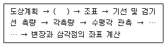
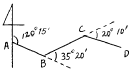
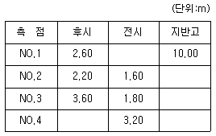
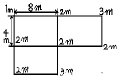

측량기능사 (2004-07-18 기출문제)
1과목: 임의 구분
1. 다음 중 국지적 측량 또는 고도의 정확성을 필요로 하지 않는 측량인 것은?
- 일반 측량
- 기본 측량
- 공공 측량
- 삼각 측량
(정답률: 58%)

2. 측량기계의 종류에 따른 분류가 아닌 것은?
- 테이프측량
- 스타디아측량
- 노선측량
- 사진측량
(정답률: 53%)
3. 평판측량 방법 중 어느 한점에서 출발하여 측점의 방향과 거리를 측정하고 다음 측점으로 평판을 옮겨 차례로 측정하여 최종 측점에 도착하는 측량방법은?
- 교회법
- 방사법
- 편각법
- 전진법
(정답률: 63%)
4. 50m 테이프로 어떤 거리를 측정하였더니 175m이었다. 이 50m의 테이프를 표준척과 비교해보니 3cm가 짧았다면 실제의 길이는?
- 179.950m
- 176.⑤0m
- 175.1⑤m
- 174.895m
(정답률: 58%)
5. 점 A로부터 2km 떨어진 두 점 B, C간의 거리가 100cm일 때 ∠BAC는 얼마인가?
- 103.13″
- 1⑤.13″
- 107.13″
- 109.13″
(정답률: 22%)
6. 다음의 측정값으로 지구의 타원율을 구하면? (단, 장반경: 6377397m, 단반경: 6356079m)
- 1/299
- 1/298
- 1/301
- 1/321
(정답률: 53%)
7. 측량하려는 두점 사이에 강, 호수, 하천 또는 계곡이 있어 그 두 점 중간에 기계를 세울 수 없는 경우 교호 수준 측량을 실시한다. 이 측량에서 양안 기슭에 표척을 세워 시준하는 이유는?
- 굴절오차와 시준오차를 소거하기 위해
- 양안 경사거리를 쉽게 측량하기 위해
- 양안의 표척과 기계사이의 거리를 다르게 하기 위해
- 표고차를 4회 평균하여 산출하기 위해
(정답률: 75%)
8. 다음은 삼각측량의 방법을 흐름도(flow chart)로 나타낸 것 중의 일부이다. ( )에 알맞는 작업은?

- 답사 및 선점
- 편심관측
- 천문관측
- 삼각망의 조정
(정답률: 96%)
9. 평판 설치의 3요소가 아닌 것은?
- 거리 맞추기
- 수평 맞추기
- 중심 맞추기
- 방향 맞추기
(정답률: 73%)
10. 기준선으로부터 어느 측선까지 시계 방향으로 잰 각을 무엇이라 하는가?
- 방향각
- 방위각
- 연직각
- 수평각
(정답률: 88%)
11. 평판 측량에서 시준에 방해하는 장애물이 없을 경우 비교적 좁은 지역에서 대축척으로 세부측량을 할 경우에 효율적인 방법은?
- 전방교회법
- 방사법
- 전진법
- 후방교회법
(정답률: 49%)
12. 토털스테이션의 사용상 주의사항이 아닌 것은?
- 이동시에는 기계를 삼각에서 분리시켜 이동한다.
- 기계를 지면에 직접 닿도록 한다.
- 전원 스위치를 내린 후 배터리를 본체로부터 분리한다.
- 커다란 진동이나 충격으로부터 기계를 보호한다.
(정답률: 79%)
13. 측량 결과가 아래 그림과 같을 때 CD 의 방위각은?

- 1⑤° ⑤′
- 115° 10′
- 125° 15′
- 135° 20′
(정답률: 25%)
14. 축척 1/1200의 도면에서 도면상의 1㎝의 실거리는?
- 1.2m
- 12m
- 120m
- 1200m
(정답률: 42%)
15. 수평각 측정에 있어 3대회 관측에서 초독의 위치로 옳은 것은?
- 0° , 30° , 60°
- 0° , 60° , 120°
- 0° , 45° , 90°
- 0° , 90° , 180°
(정답률: 46%)
16. 6980 트랜싯을 이용하여 1개의 수평각을 배각법으로 관측하였을 때 최확치로 알맞은 것은?
- 첫번째 관측한 값
- 마지막 관측한 값
- 관측자가 가장 정확하다고 생각되는 값
- 산술평균한 값
(정답률: 63%)
17. 수준 측량에 사용되는 용어의 설명 중에서 바르지 못한 것은?
- 수준면 : 연직선에 직교하는 모든 점을 잇는 곡면
- 수준선 : 수준면과 지구의 중심을 포함한 평면이 교차하는 선
- 기준면 : 지반의 높이를 비교할 때 기준이 되는 면
- 수준점 : 연직선에 직교하는 직선으로 어떤 점에서 수준선과 접하는 평면
(정답률: 52%)
18. 폐합트래버스의 외각을 측정했을 때, 다음 중 각 오차(W)를 구하는 식으로 맞는 것은? (단, n:변의 수, [α ]:측정된 교각의 합)
- W = [α ]-180(n-2)
- W = [α ]+180(n-2)
- W = [α ]-180(n+2)
- W = [α ]+180(n+2)
(정답률: 44%)
19. 측량 목적에 따른 분류가 아닌 것은?
- 지형 측량
- GPS 측량
- 노선 측량
- 하천 측량
(정답률: 67%)
20. 다음 표는 수준측량 야장의 일부이며 이로부터 측점 NO.4의 지반고를 구한 값으로 옳은 것은?

- 12.00m
- 11.80m
- 9.60m
- 8.20m
(정답률: 70%)
2과목: 임의 구분
21. 일정한 경사지에서 AB 두점간의 사거리를 측정하니 150m였다. AB 간의 고저차가 20m 였다면 수평거리는?
- 147.81m
- 148.66m
- 149.72m
- 150.00m
(정답률: 48%)
22. 각관측에서 망원경을 정, 반으로 관측 평균하여도 소거되지 않는 오차는?
- 시준축 오차
- 수평축 오차
- 연직축 오차
- 외심 오차
(정답률: 66%)
23. 교호 수준측량 결과가 각각 A점에서 a1=0.95m, a2=1.60m, B점에서 b1=0.34m, b2=1.25m 일 때 B점의 표고는? (단, A점의 표고는 60.00m 임)
- 46.24m
- 58.44m
- 60.48m
- 62.84m
(정답률: 44%)
24. 수준 측량시에 발생할 수 있는 오차의 원인 중 기계적 원인이 아닌 것은?
- 표척 눈금이 불완전하다.
- 표척을 정확히 수직으로 세우지 않았다.
- 레벨의 조정이 불완전하다.
- 표척 이음매 부분이 정확하지 않다.
(정답률: 65%)
25. 트래버스 측량에서 위거의 총합의 오차가 +0.02m, 경거의 총합의 오차가 +0.20m 이었다. 거리의 총합이 460m 일 때 폐합비는?
- 1/2239
- 1/2289
- 1/2339
- 1/2389
(정답률: 35%)
26. N45° 23'E의 역방위는?
- N45° 23'E
- N45° 23'W
- S45° 23'W
- S45° 23'E
(정답률: 61%)
27. 「한 측점의 둘레에 있는 모든 각의 합은 360° 이다」라는 조건은?
- 도형 조건
- 측점 조건
- 각 조건
- 변 조건
(정답률: 22%)
28. 방위각이 120° 이고 측선길이가 100m 일 때 위거는?
- +50.0m
- -50.0m
- +86.6m
- -86.6m
(정답률: 56%)
29. 삼각점의 선점에 관한 설명 중에서 틀린 것은?
- 삼각점의 선점은 측량의 목적, 정확도 등을 고려하여 실시한다.
- 삼각점은 오래 보존하는 일이 많고 정확한 관측을 필요로 하므로 지반이 견고하여야 하고 침하 및 동결 지반은 피한다.
- 삼각형 내각의 크기는 30~120° 가 되게 한다.
- 삼각형은 가능한 직각삼각형에 가깝도록 한다.
(정답률: 75%)
30. 방위각 250° 는 몇 상한인가?
- 제 1 상한
- 제 2 상한
- 제 3 상한
- 제 4 상한
(정답률: 74%)
31. 두 변의 길이가 각각 39.4m, 35.2m 이고, 그 사이각이 100° 18′ 인 삼각형의 면적은?
- 468.3 m2
- 568.3 m2
- 682.3 m2
- 782.3 m2
(정답률: 44%)
32. 후방 교회법에서 평판에 도해할 때 시오삼각형이 생기게되는 원인중 가장 큰 요소는?
- 평판의 구심오차 때문에
- 평판의 표정이 옳지 않기 때문에
- 평판이 정확하게 수평이 아닐 때
- 주어진 점의 높이가 서로 다르기 때문에
(정답률: 56%)
33. 평판측량에서 축척이 1/1200 일 때 허용 구심오차는? (단, 제도 허용오차 0.2㎜임)
- 12㎝
- 15㎝
- 17㎝
- 21㎝
(정답률: 50%)
34. 삼변측량을 실시하여 변장 a, b, c를 구했다. a 변에 대응하는 ∠A에 대한 cos A를 구하기 위한 식은?
- b2+c2-a2/2bc
- a2+b2-c2/2bc
- a2+c2-b2/2bc
- a2+b2-c2/2abc
(정답률: 31%)
35. 단열 삼각망을 이용하는 것이 효율적인 측량은?
- 넓은 지역의 골조 측량
- 시가지의 골조 측량
- 복잡한 지형 측량의 골조 측량
- 하천조사를 위한 골조 측량
(정답률: 41%)
36. 축척 1/25000의 지형도에서 계곡선의 간격은 얼마인가?
- 5m
- 10m
- 50m
- 100m
(정답률: 48%)
37. 등고선의 특징에 관한 설명으로 옳지 않은 것은?
- 동일 등고선상에 있는 모든 점의 높이는 같다.
- 도면 내에서 등고선이 폐합되는 경우, 산정이나 분지를 나타낸다.
- 지표면의 경사가 급한 곳에서는 등고선의 간격이 넓어 지고, 완만한 경사에서는 좁아진다.
- 높이가 다른 두 등고선은 절벽이나 동굴의 지형을 제외하고는 교차하거나 만나지 않는다.
(정답률: 68%)
38. 사진측량에서 촬영한 수직 사진은 일반적으로 광축이 연직선과 몇 도 이내의 경사로서 촬영된 사진인가?
- ± 1°
- ± 3°
- ± 5°
- ± 7°
(정답률: 48%)
39. 지형을 표시하는 방법으로 하천, 항만, 해양 등에서 일정한 간격으로 표고 또는 수심을 측정하여 도상에 숫자로 기입하는 방법은?
- 점고법
- 영선법
- 음영법
- 등고선법
(정답률: 62%)
40. 노선측량에서 곡선의 종류 중 원곡선에 해당되는 것은?
- 3차 포물선
- 클로소이드 곡선
- 렘니스케이트 곡선
- 복심 곡선
(정답률: 68%)
3과목: 임의 구분
41. 항공사진의 일반적인 종중복도는?
- 30%
- 45%
- 60%
- 90%
(정답률: 57%)
42. 표고 1000m인 지형을 초점거리 200mm인 사진기로 촬영고도 3km에서 촬영한 항공사진의 축척은?
- 1/10000
- 1/20000
- 1/30000
- 1/40000
(정답률: 13%)
43. 다음 중 거리측정에서 가장 정밀도가 낮은 것은?
- 레이저에 의한 거리 측정
- 전파 거리 측량기에 의한 거리 측정
- 광파 거리 측량기에 의한 거리 측정
- 스타디아 측량에 의한 거리 측정
(정답률: 41%)
44. 삼변법으로 면적을 구할 때 각을 몇도에 가깝게 분할하는 것이 좋은가?
- 30°
- 45°
- 60°
- 90°
(정답률: 60%)
45. 두 직선 사이에 교각(I)이 80° 인 원곡선을 설치하고자 한다. 외할(E)을 25m로 할 때 곡선 반지름(R)은?
- 80.9m
- 81.9m
- 83.9m
- 85.9m
(정답률: 30%)
46. 광파 거리 측량기의 사용에 있어서 장점이 아닌 것은?
- 기상조건에 전혀 영향을 받지 않는다.
- 지형의 영향을 받지 않는다.
- 세오돌라이트(theodolite)를 병용하면 미지점의 3차원 좌표도 구할 수 있다.
- 주로 중,단거리 측정용으로 사용된다.
(정답률: 52%)
47. 노선의 선정에 있어서 유의해야 할 사항이 아닌 것은?
- 노선은 가능한 직선으로 하고, 경사를 완만하게 하는 것이 좋다.
- 절토 및 성토의 운반거리를 가급적 길게 한다.
- 배수가 잘 되도록 충분히 고려한다.
- 토공량이 적고, 절토와 성토가 균형을 이루게 한다.
(정답률: 80%)
48. 그림과 같은 지형의 토량은 얼마인가?

- 100m3
- 160m3
- 200m3
- 320m3
(정답률: 37%)
49. 단곡선에서 접선장(T.L.)의 공식은? (단, R:곡선반경, I:교각)
- T.L.=0.0174533 R
- T.L.=R(1-cos I/2)
- T.L.=2Rsin I/2
- T.L.=Rtan I/2
(정답률: 47%)
50. 사진측량의 특징에 해당되지 않는 것은?
- 동체 측정이 가능하다.
- 접근이 곤란한 대상물의 측정이 가능하다.
- 목적에 따라 축척 변경이 용이하다.
- 정량적인 해석만이 가능하다.
(정답률: 52%)
51. 다음 중 건설교통부장관이 실시할 측량기술의 연구개발 등의 시책이 아닌 것은?
- 우주측지기술의 도입, 활용
- 정밀측량기기의 제작 보급
- 수치지형정보의 표준화
- 지도제작기술의 개발 및 자동화
(정답률: 39%)
52. 다음의 측량성과중 건설교통부장관의 허가없이 국외로 반출할 수 없는 것은?
- 측량용 사진
- 국제기구에 참고자료로 사용하기 위한 지도
- 관광시설의 선전을 목적으로 제작한 지도
- 축척 1/50,000 미만의 소축척도
(정답률: 24%)
53. 국립지리원장이 발행하는 지도의 축척이 아닌 것은?
- 1/ 5000
- 1/10,000
- 1/15,000
- 1/50,000
(정답률: 50%)
54. 다음중 측량협회의 설립목적과 관계가 가장 먼 것은?
- 측량업자 및 측량기술자등의 품위 보전
- 측량에 관한 기술의 향상
- 회원 상호간의 친목 도모
- 측량제도의 건전한 발전에 기여
(정답률: 59%)
55. 중앙지명 위원회의 인원 구성은 위원장 및 부위원장을 포함한 몇인 이내로 구성하는가?
- 20인 이내
- 15인 이내
- 10인 이내
- 7인 이내
(정답률: 49%)
56. 1등 수준점 표주의 정면에 쓰이는 것은?
- 건설교통부
- 년도
- 수준점
- 1등
(정답률: 70%)
57. 다음중 공공측량으로 지정할 수 있는 일반측량의 내용으로 틀린 것은?
- 측량실시 지역의 면적이 1km2 이상인 지형측량
- 노선의 길이가 8km 이상인 수준측량
- 촬영지역의 면적이 1km2 이상인 측량용 사진의 촬영
- 국립지리원장이 발행하는 지도의 축척과 동일한 축척의 지도제작
(정답률: 42%)
58. 측량업 등록의 결격사유에 해당되지 않는 것은?
- 파산선고를 받고 복권되지 아니한 자
- 금치산의 선고를 받은자
- 측량업의 등록이 취소된 후 3년이 경과하지 않은 자
- 한정치산의 선고를 받은자
(정답률: 47%)
59. 측량용역의 발주자는 특별한 사유가 있는 경우를 제외하고는 당해 측량업자로 부터 등록취소 처분의 내용을 통지 받거나 그 사실을 안 날로부터 얼마 이내에 한하여 도급 계약을 해지 할 수 있는가?
- 30일 이내
- 60일 이내
- 120일 이내
- 180일 이내
(정답률: 59%)
60. 측량업자로서 경쟁입찰에서 다른 사람의 입찰 행위를 방해한 경우 받는 벌칙은?
- 2년 이하의 징역 또는 500만원 이하의 벌금
- 1년 이하의 징역 또는 300만원 이하의 벌금
- 3년 이하의 징역 또는 1000만원 이하의 벌금
- 200만원 이하의 과태료
(정답률: 31%)
"일반 측량"은 국지적 측량이나 고도의 정확성을 필요로 하지 않는 측량입니다. 이는 일상적인 건축물 건설이나 도로 건설 등에서 사용되는 측량으로, 대부분의 경우 수평거리와 고도를 측정하는 정도로 충분합니다. 따라서 국지적 측량이나 고도의 정확성이 필요하지 않기 때문에 "일반 측량"이라고 부릅니다.